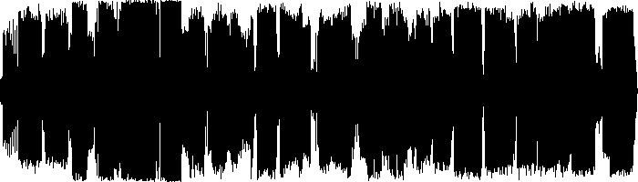

| VIBEMIX021: | CRITICAL MASS | ||
|---|---|---|---|
| 01 | Calyx | Are You Ready? | 00:00 |
| 02 | Dillinja | Nasty Ways | 06:30 |
| 03 | Dom & Roland | Can't Punish Me | 11:16 |
| 04 | John B | Up All Night | 17:24 |
| 05 | Moving Fusion | Thunderball | 23:34 |
| 06 | The Prodigy | No Good (Drum & Bass Bootleg) | 29:24 |
| 07 | Panacea | Panik Orkestra | 33:41 |
| 08 | Adam F | Original Jungle Sound (Switch Mix) | 38:44 |
| 09 | Future Prophecies | Basse the Bastard | 43:14 |
| 10 | Special Forces | The End (feat. Robert Owens) | 48:42 |
| 11 | Rawthang | Epilogue VIP | 54:32 |
| ℗ © 2015 | VIBERATIONS REC. |
| Yet another recollection of classics that's meant for the massive dancefloors only. |